Lectures 22-24#
Random Numbers#
Note: I’m first going to show you the old way of generating random numbers in NumPy. If you’re reading older code, this is likely the way you’ll see random numbers generated. All new code should be written using the new method that I show you.
Older Method: Don’t use this!
import numpy as np
np.random.randint(-22, 39,size=(2,5))
array([[23, 36, 38, 20, 33],
[ 6, 38, 23, 23, 37]])
help(np.random.randint)
Help on built-in function randint:
randint(...) method of numpy.random.mtrand.RandomState instance
randint(low, high=None, size=None, dtype=int)
Return random integers from `low` (inclusive) to `high` (exclusive).
Return random integers from the "discrete uniform" distribution of
the specified dtype in the "half-open" interval [`low`, `high`). If
`high` is None (the default), then results are from [0, `low`).
.. note::
New code should use the `~numpy.random.Generator.integers`
method of a `~numpy.random.Generator` instance instead;
please see the :ref:`random-quick-start`.
Parameters
----------
low : int or array-like of ints
Lowest (signed) integers to be drawn from the distribution (unless
``high=None``, in which case this parameter is one above the
*highest* such integer).
high : int or array-like of ints, optional
If provided, one above the largest (signed) integer to be drawn
from the distribution (see above for behavior if ``high=None``).
If array-like, must contain integer values
size : int or tuple of ints, optional
Output shape. If the given shape is, e.g., ``(m, n, k)``, then
``m * n * k`` samples are drawn. Default is None, in which case a
single value is returned.
dtype : dtype, optional
Desired dtype of the result. Byteorder must be native.
The default value is int.
.. versionadded:: 1.11.0
Returns
-------
out : int or ndarray of ints
`size`-shaped array of random integers from the appropriate
distribution, or a single such random int if `size` not provided.
See Also
--------
random_integers : similar to `randint`, only for the closed
interval [`low`, `high`], and 1 is the lowest value if `high` is
omitted.
random.Generator.integers: which should be used for new code.
Examples
--------
>>> np.random.randint(2, size=10)
array([1, 0, 0, 0, 1, 1, 0, 0, 1, 0]) # random
>>> np.random.randint(1, size=10)
array([0, 0, 0, 0, 0, 0, 0, 0, 0, 0])
Generate a 2 x 4 array of ints between 0 and 4, inclusive:
>>> np.random.randint(5, size=(2, 4))
array([[4, 0, 2, 1], # random
[3, 2, 2, 0]])
Generate a 1 x 3 array with 3 different upper bounds
>>> np.random.randint(1, [3, 5, 10])
array([2, 2, 9]) # random
Generate a 1 by 3 array with 3 different lower bounds
>>> np.random.randint([1, 5, 7], 10)
array([9, 8, 7]) # random
Generate a 2 by 4 array using broadcasting with dtype of uint8
>>> np.random.randint([1, 3, 5, 7], [[10], [20]], dtype=np.uint8)
array([[ 8, 6, 9, 7], # random
[ 1, 16, 9, 12]], dtype=uint8)
New Method: This is an example of object oriented programming (OOP)
rng = np.random.default_rng()
type(rng)
numpy.random._generator.Generator
Make a length 10 NumPy array of random integers between 0 (inclusive) and 39 (exclusive).
arr = rng.integers(0,39,size=10)
arr
array([33, 6, 23, 27, 36, 4, 4, 19, 23, 21], dtype=int64)
Choose five of those numbers (with replacement) and put them into a NumPy array.
rng.choice(arr,size=5)
array([23, 23, 23, 27, 36], dtype=int64)
help(rng.choice)
Help on built-in function choice:
choice(...) method of numpy.random._generator.Generator instance
choice(a, size=None, replace=True, p=None, axis=0, shuffle=True)
Generates a random sample from a given array
Parameters
----------
a : {array_like, int}
If an ndarray, a random sample is generated from its elements.
If an int, the random sample is generated from np.arange(a).
size : {int, tuple[int]}, optional
Output shape. If the given shape is, e.g., ``(m, n, k)``, then
``m * n * k`` samples are drawn from the 1-d `a`. If `a` has more
than one dimension, the `size` shape will be inserted into the
`axis` dimension, so the output ``ndim`` will be ``a.ndim - 1 +
len(size)``. Default is None, in which case a single value is
returned.
replace : bool, optional
Whether the sample is with or without replacement. Default is True,
meaning that a value of ``a`` can be selected multiple times.
p : 1-D array_like, optional
The probabilities associated with each entry in a.
If not given, the sample assumes a uniform distribution over all
entries in ``a``.
axis : int, optional
The axis along which the selection is performed. The default, 0,
selects by row.
shuffle : bool, optional
Whether the sample is shuffled when sampling without replacement.
Default is True, False provides a speedup.
Returns
-------
samples : single item or ndarray
The generated random samples
Raises
------
ValueError
If a is an int and less than zero, if p is not 1-dimensional, if
a is array-like with a size 0, if p is not a vector of
probabilities, if a and p have different lengths, or if
replace=False and the sample size is greater than the population
size.
See Also
--------
integers, shuffle, permutation
Notes
-----
Setting user-specified probabilities through ``p`` uses a more general but less
efficient sampler than the default. The general sampler produces a different sample
than the optimized sampler even if each element of ``p`` is 1 / len(a).
Examples
--------
Generate a uniform random sample from np.arange(5) of size 3:
>>> rng = np.random.default_rng()
>>> rng.choice(5, 3)
array([0, 3, 4]) # random
>>> #This is equivalent to rng.integers(0,5,3)
Generate a non-uniform random sample from np.arange(5) of size 3:
>>> rng.choice(5, 3, p=[0.1, 0, 0.3, 0.6, 0])
array([3, 3, 0]) # random
Generate a uniform random sample from np.arange(5) of size 3 without
replacement:
>>> rng.choice(5, 3, replace=False)
array([3,1,0]) # random
>>> #This is equivalent to rng.permutation(np.arange(5))[:3]
Generate a uniform random sample from a 2-D array along the first
axis (the default), without replacement:
>>> rng.choice([[0, 1, 2], [3, 4, 5], [6, 7, 8]], 2, replace=False)
array([[3, 4, 5], # random
[0, 1, 2]])
Generate a non-uniform random sample from np.arange(5) of size
3 without replacement:
>>> rng.choice(5, 3, replace=False, p=[0.1, 0, 0.3, 0.6, 0])
array([2, 3, 0]) # random
Any of the above can be repeated with an arbitrary array-like
instead of just integers. For instance:
>>> aa_milne_arr = ['pooh', 'rabbit', 'piglet', 'Christopher']
>>> rng.choice(aa_milne_arr, 5, p=[0.5, 0.1, 0.1, 0.3])
array(['pooh', 'pooh', 'pooh', 'Christopher', 'piglet'], # random
dtype='<U11')
arr2 = np.arange(0,100,3)
print(arr2)
[ 0 3 6 9 12 15 18 21 24 27 30 33 36 39 42 45 48 51 54 57 60 63 66 69
72 75 78 81 84 87 90 93 96 99]
rng.choice(arr2,size=5)
array([93, 21, 75, 12, 12])
Create a \(3 \times 5\) NumPy array of random real numbers between -1 and 4.#
You might expect this to work, but it won’t :(
rng.random(-1,4,size=(3,5))
---------------------------------------------------------------------------
TypeError Traceback (most recent call last)
Cell In[12], line 1
----> 1 rng.random(-1,4,size=(3,5))
File numpy\\random\\_generator.pyx:299, in numpy.random._generator.Generator.random()
TypeError: random() got multiple values for keyword argument 'size'
help(rng.random)
Help on built-in function random:
random(...) method of numpy.random._generator.Generator instance
random(size=None, dtype=np.float64, out=None)
Return random floats in the half-open interval [0.0, 1.0).
Results are from the "continuous uniform" distribution over the
stated interval. To sample :math:`Unif[a, b), b > a` use `uniform`
or multiply the output of `random` by ``(b - a)`` and add ``a``::
(b - a) * random() + a
Parameters
----------
size : int or tuple of ints, optional
Output shape. If the given shape is, e.g., ``(m, n, k)``, then
``m * n * k`` samples are drawn. Default is None, in which case a
single value is returned.
dtype : dtype, optional
Desired dtype of the result, only `float64` and `float32` are supported.
Byteorder must be native. The default value is np.float64.
out : ndarray, optional
Alternative output array in which to place the result. If size is not None,
it must have the same shape as the provided size and must match the type of
the output values.
Returns
-------
out : float or ndarray of floats
Array of random floats of shape `size` (unless ``size=None``, in which
case a single float is returned).
See Also
--------
uniform : Draw samples from the parameterized uniform distribution.
Examples
--------
>>> rng = np.random.default_rng()
>>> rng.random()
0.47108547995356098 # random
>>> type(rng.random())
<class 'float'>
>>> rng.random((5,))
array([ 0.30220482, 0.86820401, 0.1654503 , 0.11659149, 0.54323428]) # random
Three-by-two array of random numbers from [-5, 0):
>>> 5 * rng.random((3, 2)) - 5
array([[-3.99149989, -0.52338984], # random
[-2.99091858, -0.79479508],
[-1.23204345, -1.75224494]])
#3x5 array of random reals between 0 and 1
rng.random((3,5))
array([[0.20270874, 0.78033051, 0.61144468, 0.87940903, 0.32854512],
[0.00138894, 0.80623484, 0.70503047, 0.58775537, 0.9687562 ],
[0.08535787, 0.38527396, 0.62909774, 0.68995654, 0.97296583]])
#Mult. by 5 to stretch to correct length
5*rng.random((3,5))
array([[0.58349676, 1.94311595, 3.4948748 , 4.16537638, 3.06291873],
[4.21616256, 0.85010516, 4.70749119, 1.17201819, 2.51860952],
[4.55334169, 1.18748359, 3.86777807, 3.31513624, 0.1054319 ]])
#subtract 1 to shift to correct interval.
5*rng.random((3,5))-1
array([[-0.83140611, -0.87330205, 1.54344869, 3.74695857, 1.9957954 ],
[-0.81729172, 3.75010213, 1.69428237, 1.71834214, 1.76409821],
[-0.39674671, 2.74049672, -0.33139652, 1.34108869, 0.66021726]])
Running the above cell a few times, we see that we can get pretty close to both -1 and 4.
Create a length 10 NumPy array of random numbers that follow a normal distribution with mean 2 and standard deviation 0.1.
This isn’t super important for our class, I just wanted to show it as an example.
help(rng.normal)
Help on built-in function normal:
normal(...) method of numpy.random._generator.Generator instance
normal(loc=0.0, scale=1.0, size=None)
Draw random samples from a normal (Gaussian) distribution.
The probability density function of the normal distribution, first
derived by De Moivre and 200 years later by both Gauss and Laplace
independently [2]_, is often called the bell curve because of
its characteristic shape (see the example below).
The normal distributions occurs often in nature. For example, it
describes the commonly occurring distribution of samples influenced
by a large number of tiny, random disturbances, each with its own
unique distribution [2]_.
Parameters
----------
loc : float or array_like of floats
Mean ("centre") of the distribution.
scale : float or array_like of floats
Standard deviation (spread or "width") of the distribution. Must be
non-negative.
size : int or tuple of ints, optional
Output shape. If the given shape is, e.g., ``(m, n, k)``, then
``m * n * k`` samples are drawn. If size is ``None`` (default),
a single value is returned if ``loc`` and ``scale`` are both scalars.
Otherwise, ``np.broadcast(loc, scale).size`` samples are drawn.
Returns
-------
out : ndarray or scalar
Drawn samples from the parameterized normal distribution.
See Also
--------
scipy.stats.norm : probability density function, distribution or
cumulative density function, etc.
Notes
-----
The probability density for the Gaussian distribution is
.. math:: p(x) = \frac{1}{\sqrt{ 2 \pi \sigma^2 }}
e^{ - \frac{ (x - \mu)^2 } {2 \sigma^2} },
where :math:`\mu` is the mean and :math:`\sigma` the standard
deviation. The square of the standard deviation, :math:`\sigma^2`,
is called the variance.
The function has its peak at the mean, and its "spread" increases with
the standard deviation (the function reaches 0.607 times its maximum at
:math:`x + \sigma` and :math:`x - \sigma` [2]_). This implies that
:meth:`normal` is more likely to return samples lying close to the
mean, rather than those far away.
References
----------
.. [1] Wikipedia, "Normal distribution",
https://en.wikipedia.org/wiki/Normal_distribution
.. [2] P. R. Peebles Jr., "Central Limit Theorem" in "Probability,
Random Variables and Random Signal Principles", 4th ed., 2001,
pp. 51, 51, 125.
Examples
--------
Draw samples from the distribution:
>>> mu, sigma = 0, 0.1 # mean and standard deviation
>>> s = np.random.default_rng().normal(mu, sigma, 1000)
Verify the mean and the variance:
>>> abs(mu - np.mean(s))
0.0 # may vary
>>> abs(sigma - np.std(s, ddof=1))
0.0 # may vary
Display the histogram of the samples, along with
the probability density function:
>>> import matplotlib.pyplot as plt
>>> count, bins, ignored = plt.hist(s, 30, density=True)
>>> plt.plot(bins, 1/(sigma * np.sqrt(2 * np.pi)) *
... np.exp( - (bins - mu)**2 / (2 * sigma**2) ),
... linewidth=2, color='r')
>>> plt.show()
Two-by-four array of samples from the normal distribution with
mean 3 and standard deviation 2.5:
>>> np.random.default_rng().normal(3, 2.5, size=(2, 4))
array([[-4.49401501, 4.00950034, -1.81814867, 7.29718677], # random
[ 0.39924804, 4.68456316, 4.99394529, 4.84057254]]) # random
rng.normal(2,0.1,size=10)
array([2.16689283, 1.93172044, 1.94044218, 2.0949393 , 2.13028662,
1.96037919, 1.85991399, 1.89127802, 2.03435559, 2.0255439 ])
Notice: the values are clustered around 2, and if they deviate from the average, it’s likely within 0.1.
More specifically (according to stats or probability), 68% of values lie within one standard deviation, i.e. \( \pm 0.1\), of the mean 2.
95% of values lie within 2 standard deviations, i.e. \( \pm 0.2\), of the mean 2.
Broadcasting in Numpy#
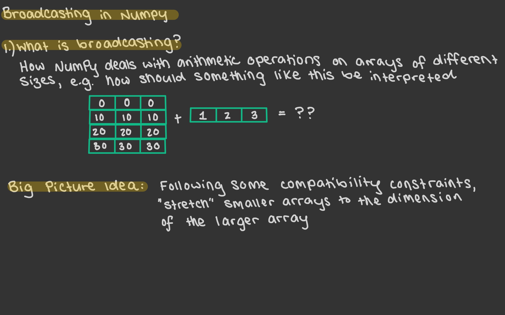 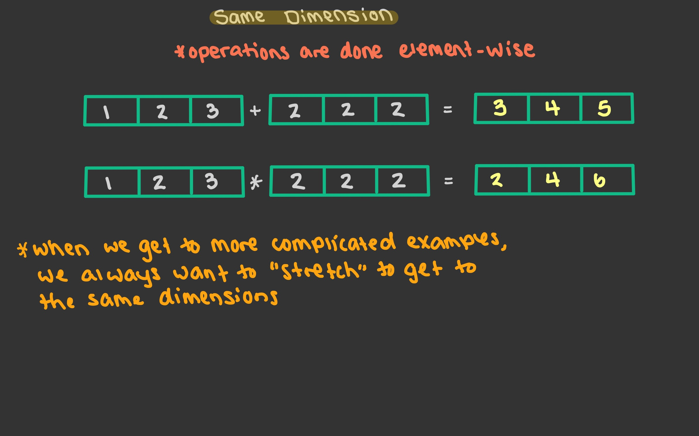 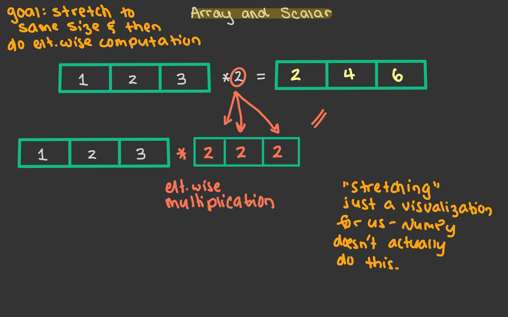 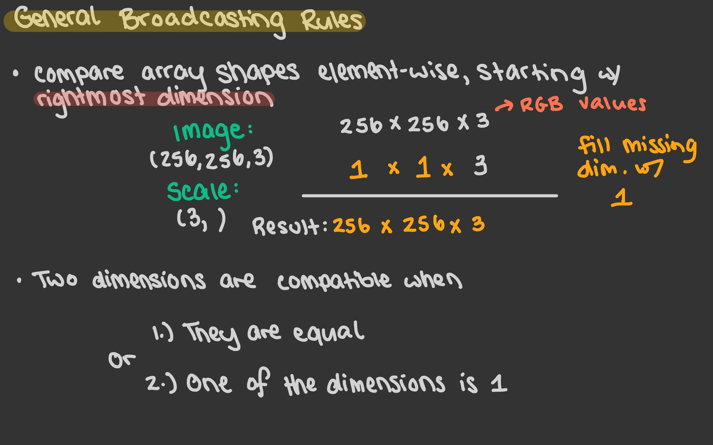 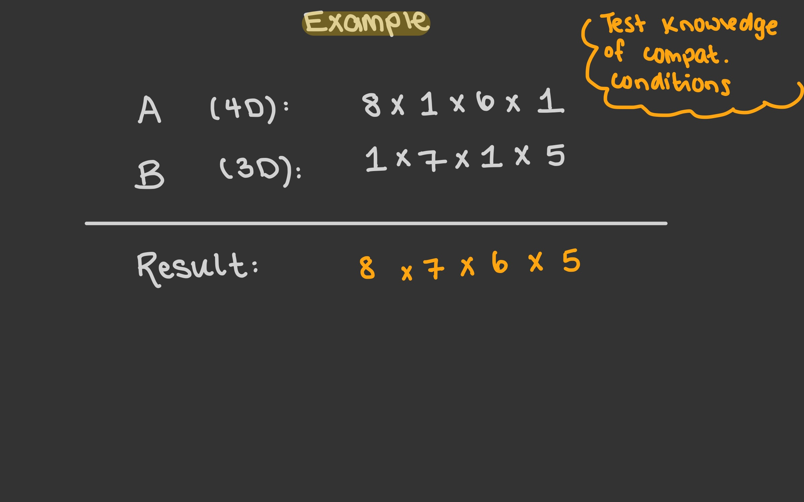 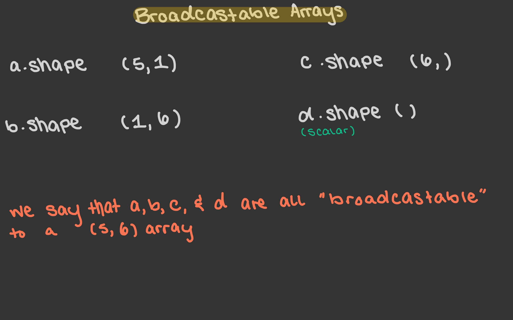 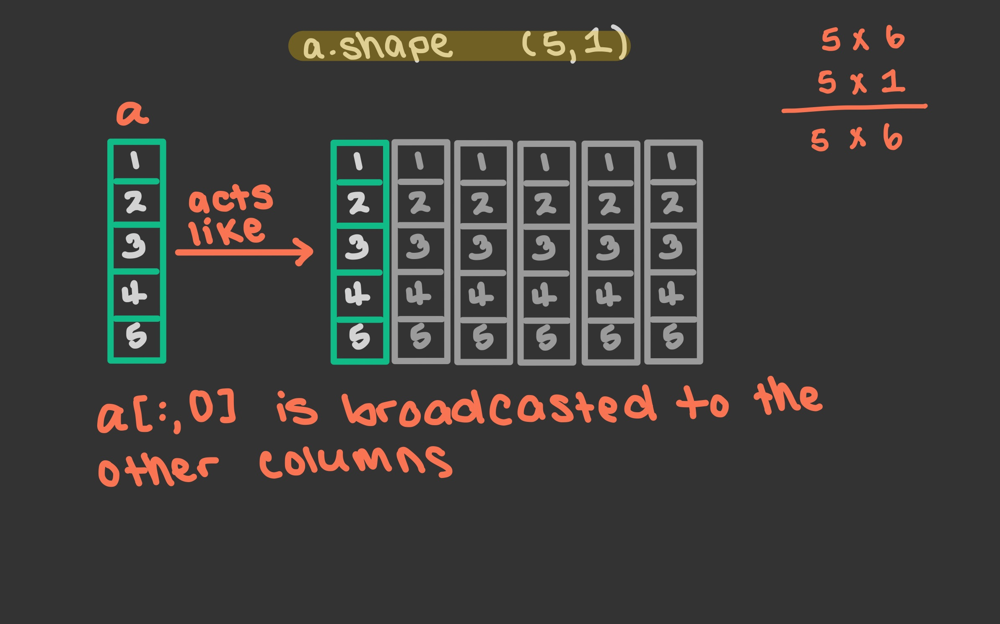 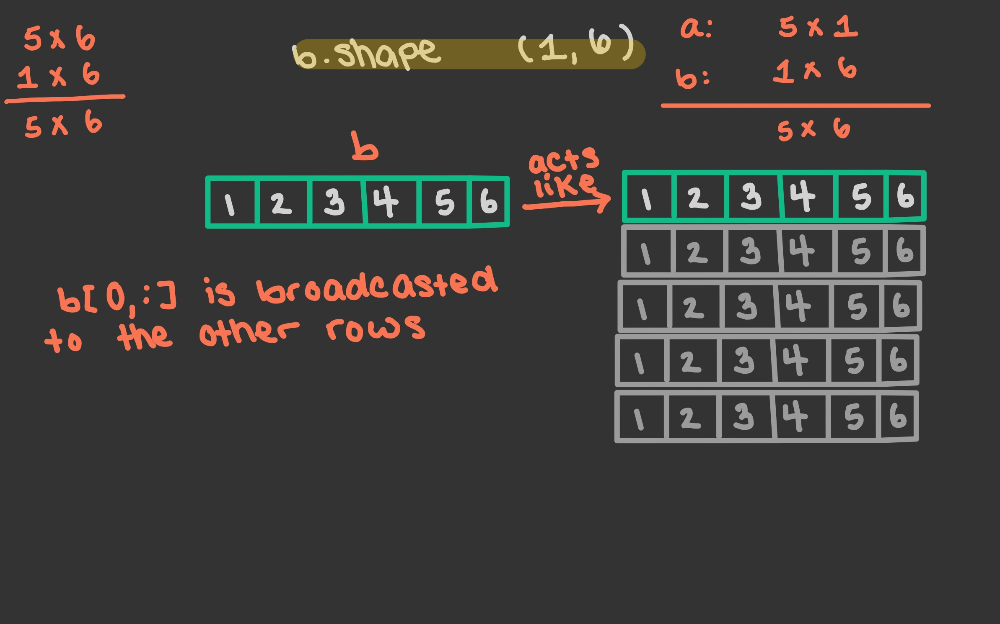 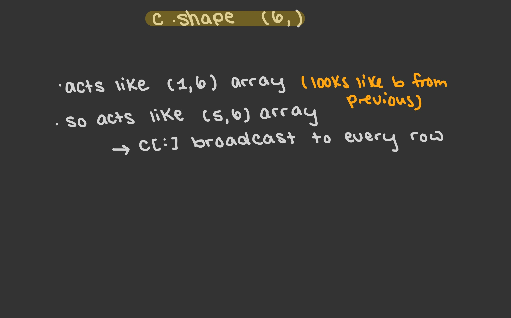 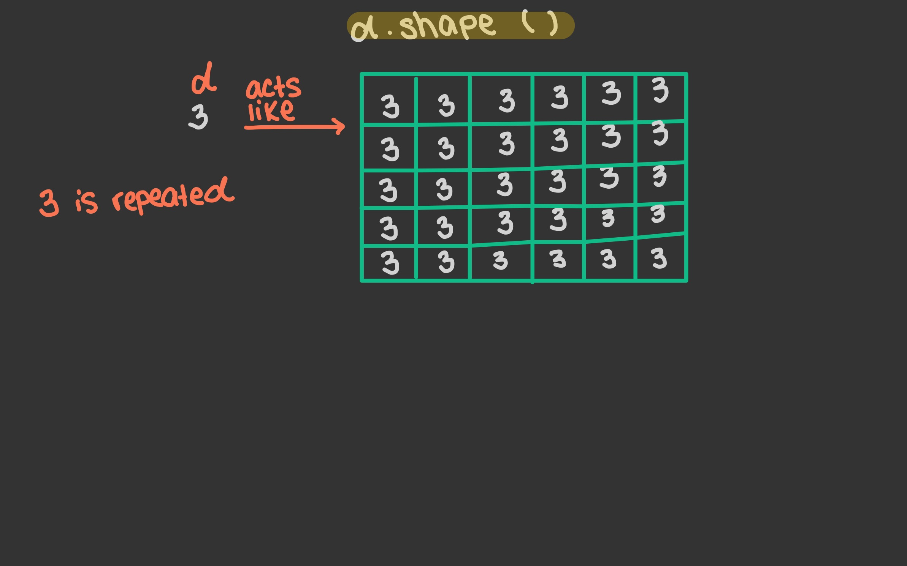 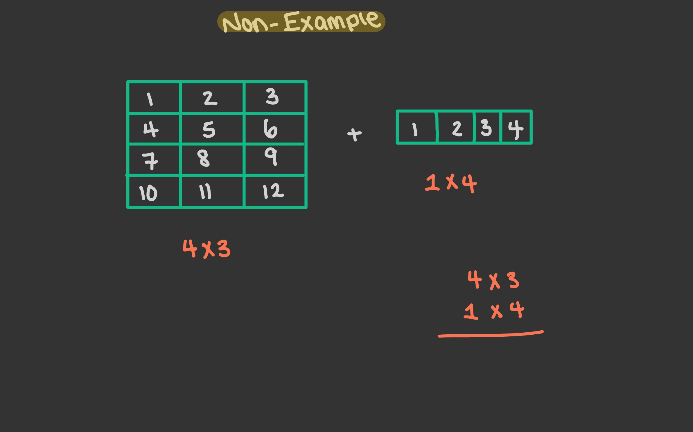
Changing Rows and Columns, and examples of broadcasting#
Goal: Modify rows and columns of NumPy arrays.
Construct The \(4 \times 4\) matrix
\( \begin{pmatrix} 0 & 0 & 0 & 0 \\ 1 & 1 & 1 & 1 \\ 2 & 2 & 2 & 2 \\ 3 & 3 & 3 & 3 \\ \end{pmatrix} \)
import numpy as np
ThisMat = np.zeros((4,4), dtype=int)
print(ThisMat)
[[0 0 0 0]
[0 0 0 0]
[0 0 0 0]
[0 0 0 0]]
for row in range(4):
for col in range(4):
ThisMat[row, col] = row
print(ThisMat)
[[0 0 0 0]
[1 1 1 1]
[2 2 2 2]
[3 3 3 3]]
ThisMat[3] +3
array([6, 6, 6, 6])
ThisMat[:,3] + 3 #even though I referenced a column, the output is given as a row, it only has 1-dim.
array([3, 4, 5, 6])
ThisMat[:,3] = ThisMat[:,3] + 3
print(ThisMat)
[[0 0 0 3]
[1 1 1 4]
[2 2 2 5]
[3 3 3 6]]
ThisMat[:,3] += 3 #This shortcut works in Python, and it didn't work in Matlab!
print(ThisMat)
[[0 0 0 6]
[1 1 1 7]
[2 2 2 8]
[3 3 3 9]]
One strategy: loop on the rows of ThisMat, add n to each row
ThisMat = np.zeros((4,4), dtype=int)
for n in range(4):
ThisMat[n] += n #shortcut for ThisMat[n] = ThisMat[n] + n
print(ThisMat)
[[0 0 0 0]
[1 1 1 1]
[2 2 2 2]
[3 3 3 3]]
ThisMat[1]
array([1, 1, 1, 1])
ThisMat[1,0]
1
Recall: np.arange is the numpy array version of range
print([0, 1, 2, 3])
np.array([0,1,2,3])
[0, 1, 2, 3]
array([0, 1, 2, 3])
print(range(4))
np.arange(4) #Still computationally efficient, even though all elements are listed
range(0, 4)
array([0, 1, 2, 3])
Loopless strategy: broadcast using addition, which takes + np.arange(4) across the (4,4) array of zeros.
ThatMat = np.zeros((4,4), dtype=int)
print(ThatMat)
ThatMat = ThatMat + np.arange(4)
ThatMat
[[0 0 0 0]
[0 0 0 0]
[0 0 0 0]
[0 0 0 0]]
array([[0, 1, 2, 3],
[0, 1, 2, 3],
[0, 1, 2, 3],
[0, 1, 2, 3]])
ThatMat.T #Transpose of ThatMat. Rows swap to Columns, and vice versa.
array([[0, 0, 0, 0],
[1, 1, 1, 1],
[2, 2, 2, 2],
[3, 3, 3, 3]])
Alternative approach: Replace every row with np.arange(4) with careful slicing, then take the transpose
OurMat = np.zeros((4,4), dtype=int)
OurMat[1] = np.arange(4)
print(OurMat)
[[0 0 0 0]
[0 1 2 3]
[0 0 0 0]
[0 0 0 0]]
OurMat = np.zeros((4,4), dtype=int)
OurMat[:] = np.arange(4) #replace all rows with np.arange(4). The shape broadcasts across the entire array
print(OurMat)
print() #blank line, for spacing the outputs
print(OurMat.T)
[[0 1 2 3]
[0 1 2 3]
[0 1 2 3]
[0 1 2 3]]
[[0 0 0 0]
[1 1 1 1]
[2 2 2 2]
[3 3 3 3]]
Now what if we wanted to broadcast across the columns instead of the rows? It’s possible if we can change the shape of np.arange(4) into a column
np.arange(4).T #Does not change with a transpose. This is because there is only one dimension to its shape
array([0, 1, 2, 3])
print(np.arange(4).shape)
print(np.arange(4).ndim)
(4,)
1
There are 2 possible workarounds: Write an array by hand or reshape the array
np.array([[0], [1], [2] ,[3]]) #A little annoying to write, even though it's only 4 entries
array([[0],
[1],
[2],
[3]])
np.array([[0, 1, 2, 3]]).T #Slightly less annoying, but still hard for longer arrays. Double [[ ]] required for 2-dimensional array and transpose.
array([[0],
[1],
[2],
[3]])
np.arange(4).reshape(4,1) #Best method overall!
array([[0],
[1],
[2],
[3]])
arr = np.zeros((4,4), dtype=int)
print(arr)
print()
z = np.arange(4).reshape(4,1)
print(z)
arr = arr + z
print()
print(arr)
[[0 0 0 0]
[0 0 0 0]
[0 0 0 0]
[0 0 0 0]]
[[0]
[1]
[2]
[3]]
[[0 0 0 0]
[1 1 1 1]
[2 2 2 2]
[3 3 3 3]]
arr[3]
array([3, 3, 3, 3])
arr[3] = [2,10]
---------------------------------------------------------------------------
ValueError Traceback (most recent call last)
Cell In[42], line 1
----> 1 arr[3] = [2,10]
ValueError: could not broadcast input array from shape (2,) into shape (4,)
The error basically says “I don’t know how to stretch a length 2 array into a length 4 array”.
arr[3] = [2,10,2,10]
arr
array([[ 0, 0, 0, 0],
[ 1, 1, 1, 1],
[ 2, 2, 2, 2],
[ 2, 10, 2, 10]])
arr[0] = 5
arr
array([[ 5, 5, 5, 5],
[ 1, 1, 1, 1],
[ 2, 2, 2, 2],
[ 2, 10, 2, 10]])
arr[:,0:2] = 99
arr
array([[99, 99, 5, 5],
[99, 99, 1, 1],
[99, 99, 2, 2],
[99, 99, 2, 10]])
The above are examples of something called broadcasting, which we’ll see next in lecture.
[1,3,4,7].reshape(4,1) #lists cannot be reshaped. We need numpy arrays in order to reshape
---------------------------------------------------------------------------
AttributeError Traceback (most recent call last)
Cell In[46], line 1
----> 1 [1,3,4,7].reshape(4,1)
AttributeError: 'list' object has no attribute 'reshape'
arr.shape
(4, 4)
w = np.array([1,3,4,7])
w.shape
(4,)
w.reshape(2,2)
array([[1, 3],
[4, 7]])
Further examples with broadcasting#
Below, compare the results of adding v1 + v2 versus adding A1 + A2
import numpy as np
v1 = np.arange(7).reshape(1,7)
print(v1)
print()
A1 = np.zeros((8,7), dtype = int) + v1
print(A1)
[[0 1 2 3 4 5 6]]
[[0 1 2 3 4 5 6]
[0 1 2 3 4 5 6]
[0 1 2 3 4 5 6]
[0 1 2 3 4 5 6]
[0 1 2 3 4 5 6]
[0 1 2 3 4 5 6]
[0 1 2 3 4 5 6]
[0 1 2 3 4 5 6]]
v2 = np.arange(8).reshape(8,1)
print(v2)
print()
A2 = np.zeros((8,7), dtype = int) + v2
print(A2)
[[0]
[1]
[2]
[3]
[4]
[5]
[6]
[7]]
[[0 0 0 0 0 0 0]
[1 1 1 1 1 1 1]
[2 2 2 2 2 2 2]
[3 3 3 3 3 3 3]
[4 4 4 4 4 4 4]
[5 5 5 5 5 5 5]
[6 6 6 6 6 6 6]
[7 7 7 7 7 7 7]]
v1+v2
array([[ 0, 1, 2, 3, 4, 5, 6],
[ 1, 2, 3, 4, 5, 6, 7],
[ 2, 3, 4, 5, 6, 7, 8],
[ 3, 4, 5, 6, 7, 8, 9],
[ 4, 5, 6, 7, 8, 9, 10],
[ 5, 6, 7, 8, 9, 10, 11],
[ 6, 7, 8, 9, 10, 11, 12],
[ 7, 8, 9, 10, 11, 12, 13]])
A1 + A2
array([[ 0, 1, 2, 3, 4, 5, 6],
[ 1, 2, 3, 4, 5, 6, 7],
[ 2, 3, 4, 5, 6, 7, 8],
[ 3, 4, 5, 6, 7, 8, 9],
[ 4, 5, 6, 7, 8, 9, 10],
[ 5, 6, 7, 8, 9, 10, 11],
[ 6, 7, 8, 9, 10, 11, 12],
[ 7, 8, 9, 10, 11, 12, 13]])
v1+v2 == A1 + A2
array([[ True, True, True, True, True, True, True],
[ True, True, True, True, True, True, True],
[ True, True, True, True, True, True, True],
[ True, True, True, True, True, True, True],
[ True, True, True, True, True, True, True],
[ True, True, True, True, True, True, True],
[ True, True, True, True, True, True, True],
[ True, True, True, True, True, True, True]])
NewArr = np.arange(1,25).reshape(4,6)
NewArr
array([[ 1, 2, 3, 4, 5, 6],
[ 7, 8, 9, 10, 11, 12],
[13, 14, 15, 16, 17, 18],
[19, 20, 21, 22, 23, 24]])
Broadcasting a shape (4,6) array with a shape (1,6) array
NewArr + [[1, 1, 11, 1, 1, 1]]
array([[ 2, 3, 14, 5, 6, 7],
[ 8, 9, 20, 11, 12, 13],
[14, 15, 26, 17, 18, 19],
[20, 21, 32, 23, 24, 25]])
np.array([[1, 1, 11, 1, 1, 1]]).shape
(1, 6)
Broadcasting a shape (4,6) array with a shape (6,) array is only different because of [ ] versus [[ ]]
NewArr + [1, 1, 11, 1, 1, 1]
array([[ 2, 3, 14, 5, 6, 7],
[ 8, 9, 20, 11, 12, 13],
[14, 15, 26, 17, 18, 19],
[20, 21, 32, 23, 24, 25]])
np.array([1, 1, 11, 1, 1, 1]).shape
(6,)
Broadcasting a shape (4,6) array with a shape (4,) array is not possible. Nor with a shape (1,4) array. The dimension of length 4 is in the wrong spot
NewArr + [5 , 9, 0, 9]
---------------------------------------------------------------------------
ValueError Traceback (most recent call last)
Cell In[62], line 1
----> 1 NewArr + [5 , 9, 0, 9]
ValueError: operands could not be broadcast together with shapes (4,6) (4,)
NewArr + [[5 , 9, 0, 9]]
---------------------------------------------------------------------------
ValueError Traceback (most recent call last)
Cell In[63], line 1
----> 1 NewArr + [[5 , 9, 0, 9]]
ValueError: operands could not be broadcast together with shapes (4,6) (1,4)
We need a shape (4,1) array to broadcast into a shape (4,6) array. There are two good ways to create this:
vecbroadcast1 = np.array([5, 9, 0, 9]).reshape(-1,1) #the -1 is replaced with whichever number makes this shape work, depending on number of elts.
print(vecbroadcast1)
[[5]
[9]
[0]
[9]]
print(NewArr)
NewArr + vecbroadcast1
[[ 1 2 3 4 5 6]
[ 7 8 9 10 11 12]
[13 14 15 16 17 18]
[19 20 21 22 23 24]]
array([[ 6, 7, 8, 9, 10, 11],
[16, 17, 18, 19, 20, 21],
[13, 14, 15, 16, 17, 18],
[28, 29, 30, 31, 32, 33]])
NewArr + [[5], [9], [0], [9]]
array([[ 6, 7, 8, 9, 10, 11],
[16, 17, 18, 19, 20, 21],
[13, 14, 15, 16, 17, 18],
[28, 29, 30, 31, 32, 33]])
Even More examples
a = np.arange(5).reshape(5,1)
b = np.arange(6).reshape(1,6)
c = np.arange(10,16)
print(a)
print(a.shape)
print()
print(b)
print(b.shape)
print()
print(c)
print(c.shape)
d = 15
[[0]
[1]
[2]
[3]
[4]]
(5, 1)
[[0 1 2 3 4 5]]
(1, 6)
[10 11 12 13 14 15]
(6,)
TheArr = np.arange(30).reshape(5,6)
print(TheArr)
[[ 0 1 2 3 4 5]
[ 6 7 8 9 10 11]
[12 13 14 15 16 17]
[18 19 20 21 22 23]
[24 25 26 27 28 29]]
print(TheArr + a)
print(TheArr*a)
[[ 0 1 2 3 4 5]
[ 7 8 9 10 11 12]
[14 15 16 17 18 19]
[21 22 23 24 25 26]
[28 29 30 31 32 33]]
[[ 0 0 0 0 0 0]
[ 6 7 8 9 10 11]
[ 24 26 28 30 32 34]
[ 54 57 60 63 66 69]
[ 96 100 104 108 112 116]]
print(TheArr + b)
print(TheArr*b)
[[ 0 2 4 6 8 10]
[ 6 8 10 12 14 16]
[12 14 16 18 20 22]
[18 20 22 24 26 28]
[24 26 28 30 32 34]]
[[ 0 1 4 9 16 25]
[ 0 7 16 27 40 55]
[ 0 13 28 45 64 85]
[ 0 19 40 63 88 115]
[ 0 25 52 81 112 145]]
TheArr[0::2] = c #replace every other row with c
print(TheArr)
[[10 11 12 13 14 15]
[ 6 7 8 9 10 11]
[10 11 12 13 14 15]
[18 19 20 21 22 23]
[10 11 12 13 14 15]]
TheArr[1:5:2] = TheArr[1:5:2] + b
print(TheArr)
[[10 11 12 13 14 15]
[ 6 8 10 12 14 16]
[10 11 12 13 14 15]
[18 20 22 24 26 28]
[10 11 12 13 14 15]]
print(TheArr) #before
print()
TheArr[1:5:2] += b # += is a shortcut for TheArr[1:5:2] = TheArr[1:5:2] + b. We can also use *= and -= as shortcuts.
print(TheArr) #after
[[10 11 12 13 14 15]
[ 6 8 10 12 14 16]
[10 11 12 13 14 15]
[18 20 22 24 26 28]
[10 11 12 13 14 15]]
[[10 11 12 13 14 15]
[ 6 9 12 15 18 21]
[10 11 12 13 14 15]
[18 21 24 27 30 33]
[10 11 12 13 14 15]]
Logic in base Python vs. Logic in NumPy#
General Rules#
In base Python:
and,or,notIn NumPy (and pandas):
&,|,~(note that!=is used for not equals)
import numpy as np
rng = np.random.default_rng()
n = 20
arr = rng.integers(-50,51, size=n)
mylist = list(arr)
mylist
[14,
41,
40,
-22,
-37,
-42,
49,
-3,
-2,
-11,
-32,
1,
2,
-24,
-25,
-28,
-47,
45,
42,
25]
Motivating Question: Find all entries in arr and mylist that are strictly between -10 and 10.
mylist < 10 #cannot compare an entire list to an integer. But does this work for an array?
---------------------------------------------------------------------------
TypeError Traceback (most recent call last)
Cell In[77], line 1
----> 1 mylist < 10
TypeError: '<' not supported between instances of 'list' and 'int'
Let’s start with the list. We’ll do it with something called “list comprehension”.
[x for x in mylist if x < 10 and x > -10]
[-3, -2, 1, 2]
smalllist = []
for x in mylist:
if x < 10 and x > -10:
smalllist.append(x)
print(smalllist)
[-3, -2, 1, 2]
As an example, notice that if I use & there is no error. However, I want to avoid doing this. It won’t always work the way you expect.
[x for x in mylist if (x > -10) & (x < 10)]
[-3, -2, 1, 2]
For those of you that have seen Math 13, here are some examples of DeMorgan’s Law (you don’t need to know this for Math 9). Note that these results are the same as the output above.
[x for x in mylist if not((x <= -10) or (x >= 10))]
[-3, -2, 1, 2]
[x for x in mylist if not(x <= -10) and not(x >= 10)]
[-3, -2, 1, 2]
Now let’s compare how we can handle this problem using arrays.
arr
array([ 14, 41, 40, -22, -37, -42, 49, -3, -2, -11, -32, 1, 2,
-24, -25, -28, -47, 45, 42, 25], dtype=int64)
arr < 10
array([False, False, False, True, True, True, False, True, True,
True, True, True, True, True, True, True, True, False,
False, False])
Now, let’s practice with NumPy arrays.
bool = (arr > -10) & (arr < 10) #success! It works similar to Matlab
print(bool)
[False False False False False False False True True False False True
True False False False False False False False]
This is an example of a boolean array. For each entry of arr it returns True if the corresponding entry is between -10 and 10, and False otherwise.
arr[bool] #again like Matlab! Return the elements corresponding to True indices
array([-3, -2, 1, 2], dtype=int64)
arr[(arr > -10) & (arr < 10)]
array([-3, -2, 1, 2], dtype=int64)
This is an example of boolean indexing.
Below is the same type of negation and DeMorgan’s Law we saw with lists
(arr <= -10) | (arr >=10)
array([ True, True, True, True, True, True, True, False, False,
True, True, False, False, True, True, True, True, True,
True, True])
~(arr <= -10) | (arr >=10)
array([ True, True, True, False, False, False, True, True, True,
False, False, True, True, False, False, False, False, True,
True, True])
arr[~((arr <= -10) | (arr >= 10))]
array([-3, -2, 1, 2], dtype=int64)
~(arr <=-10) & ~(arr >=10)
array([False, False, False, False, False, False, False, True, True,
False, False, True, True, False, False, False, False, False,
False, False])
arr[~(arr <= -10) & ~(arr >= 10)]
array([-3, -2, 1, 2], dtype=int64)
#Notice we get an error, need & symbol in numpy, the word and does not work.
(arr > -10) and (arr < 10)
---------------------------------------------------------------------------
ValueError Traceback (most recent call last)
Cell In[93], line 2
1 #Notice we get an error, need & symbol in numpy, the word and does not work.
----> 2 (arr > -10) and (arr < 10)
ValueError: The truth value of an array with more than one element is ambiguous. Use a.any() or a.all()
Note: Logical negation uses ~, while not equals uses !=
arr != 3
array([ True, True, True, True, True, True, True, True, True,
True, True, True, True, True, True, True, True, True,
True, True])
The axis keyword argument#
Motivating Question from experimental probability: If you roll 4 distinct 6-sided dice, what is the probability that the largest value is 5?
The code below models rolling 4 dice.
import numpy as np
rng = np.random.default_rng()
four_rolls = rng.integers(1,7,size=4)
print(four_rolls)
[3 1 6 4]
np.max(four_rolls)
6
four_rolls.max()
6
Let’s start by coding this is the way we’re most familiar with.
exp = 10 #number of experiments
s = 0 #number of successes
for i in range(exp):
if np.max(rng.integers(1,7,size=4)) == 5: #if the max of 4 rolls equals 5, all in one line. Can expand this to more lines if it's easier for you.
s += 1 #shorthand for s = s+1
s/exp #number of successes / number of experiments is the experimental probability
0.4
for-loops are extremely slow! We’ll see that in just a minute. Remember the Jupyter magic %%timeit – the it means iteration, and it runs the code a number of times and computes average time. This will be too slow for this example, so we’ll use %%time.
%%time
exp = 10**6
s = 0
for i in range(exp):
if np.max(rng.integers(1,7,size=4)) == 5:
s += 1 #shorthand for s = s+1
s/exp
CPU times: total: 12.3 s
Wall time: 12.3 s
0.284856
exp = 10
arr = rng.integers(1,7,size=(exp,4))
print(arr)
[[4 3 5 2]
[4 3 1 3]
[5 3 1 3]
[5 5 3 5]
[5 6 1 1]
[4 4 3 3]
[6 1 5 4]
[6 4 1 4]
[1 2 4 5]
[2 1 5 5]]
Here, each row of the array represents an experiment.
The first method I’m going to show you is extremely flexible in that it will work for really any function I want – the drawback is that it will also be quite slow.
help(np.apply_along_axis)
Help on _ArrayFunctionDispatcher in module numpy:
apply_along_axis(func1d, axis, arr, *args, **kwargs)
Apply a function to 1-D slices along the given axis.
Execute `func1d(a, *args, **kwargs)` where `func1d` operates on 1-D arrays
and `a` is a 1-D slice of `arr` along `axis`.
This is equivalent to (but faster than) the following use of `ndindex` and
`s_`, which sets each of ``ii``, ``jj``, and ``kk`` to a tuple of indices::
Ni, Nk = a.shape[:axis], a.shape[axis+1:]
for ii in ndindex(Ni):
for kk in ndindex(Nk):
f = func1d(arr[ii + s_[:,] + kk])
Nj = f.shape
for jj in ndindex(Nj):
out[ii + jj + kk] = f[jj]
Equivalently, eliminating the inner loop, this can be expressed as::
Ni, Nk = a.shape[:axis], a.shape[axis+1:]
for ii in ndindex(Ni):
for kk in ndindex(Nk):
out[ii + s_[...,] + kk] = func1d(arr[ii + s_[:,] + kk])
Parameters
----------
func1d : function (M,) -> (Nj...)
This function should accept 1-D arrays. It is applied to 1-D
slices of `arr` along the specified axis.
axis : integer
Axis along which `arr` is sliced.
arr : ndarray (Ni..., M, Nk...)
Input array.
args : any
Additional arguments to `func1d`.
kwargs : any
Additional named arguments to `func1d`.
.. versionadded:: 1.9.0
Returns
-------
out : ndarray (Ni..., Nj..., Nk...)
The output array. The shape of `out` is identical to the shape of
`arr`, except along the `axis` dimension. This axis is removed, and
replaced with new dimensions equal to the shape of the return value
of `func1d`. So if `func1d` returns a scalar `out` will have one
fewer dimensions than `arr`.
See Also
--------
apply_over_axes : Apply a function repeatedly over multiple axes.
Examples
--------
>>> def my_func(a):
... """Average first and last element of a 1-D array"""
... return (a[0] + a[-1]) * 0.5
>>> b = np.array([[1,2,3], [4,5,6], [7,8,9]])
>>> np.apply_along_axis(my_func, 0, b)
array([4., 5., 6.])
>>> np.apply_along_axis(my_func, 1, b)
array([2., 5., 8.])
For a function that returns a 1D array, the number of dimensions in
`outarr` is the same as `arr`.
>>> b = np.array([[8,1,7], [4,3,9], [5,2,6]])
>>> np.apply_along_axis(sorted, 1, b)
array([[1, 7, 8],
[3, 4, 9],
[2, 5, 6]])
For a function that returns a higher dimensional array, those dimensions
are inserted in place of the `axis` dimension.
>>> b = np.array([[1,2,3], [4,5,6], [7,8,9]])
>>> np.apply_along_axis(np.diag, -1, b)
array([[[1, 0, 0],
[0, 2, 0],
[0, 0, 3]],
[[4, 0, 0],
[0, 5, 0],
[0, 0, 6]],
[[7, 0, 0],
[0, 8, 0],
[0, 0, 9]]])
axis simply means the direction I want to do the computation along.
print(arr)
[[4 3 5 2]
[4 3 1 3]
[5 3 1 3]
[5 5 3 5]
[5 6 1 1]
[4 4 3 3]
[6 1 5 4]
[6 4 1 4]
[1 2 4 5]
[2 1 5 5]]
np.max(arr) #Maximum out of all 40 entries
6
np.apply_along_axis(np.max, axis=1, arr=arr)
array([5, 4, 5, 5, 6, 4, 6, 6, 5, 5], dtype=int64)
np.apply_along_axis(np.max, axis=1, arr=arr) == 5
array([ True, False, True, True, False, False, False, False, True,
True])
Try to predict what will happen when I run the following:
np.apply_along_axis(np.max, axis=0, arr=arr)
array([6, 6, 5, 5], dtype=int64)
exp = 10
arr = rng.integers(1,7,size=(exp,4))
(np.apply_along_axis(np.max,axis=1,arr=arr) == 5).mean() #Recall: Numpy interprets True as 1 and False as 0 in numerical computations
0.2
Now, let’s time this with \(10^6\) experiments. You might be surprised to see that it’s still pretty slow.
%%time
exp = 10**6
arr = rng.integers(1,7,size=(exp,4))
(np.apply_along_axis(np.max,axis=1,arr=arr) == 5).mean()
CPU times: total: 4.62 s
Wall time: 4.64 s
0.284911
The reason this is slower than we expect is because np.apply_along_axis is not optimized for this kind of computation. It has to be flexible enough to work with almost any function we give it.
Important note: some methods of the numpy package directly also apply to individual arrays. for instance, we can take the max of arr with arr.max instead of np.max
print(arr.max())
print(np.max(arr))
6
6
np.max(arr, axis=1)
array([5, 6, 6, ..., 5, 6, 5], dtype=int64)
arr.max(axis=1)
array([5, 6, 6, ..., 5, 6, 5], dtype=int64)
exp = 10
arr = rng.integers(1,7,size=(exp,4))
(arr.max(axis=1) == 5).mean()
0.5
#1-Dimensional
(arr.max(axis=1) == 5)
array([ True, False, True, True, False, False, False, False, True,
True])
arr.max(axis=1).shape
(10,)
#axis = 0 is the default
(arr.max(axis=1) == 5).mean(axis=0)
0.5
The following throws and error, since the array only has one dimension. We only talk about axis=1 when there are at least two dimensions.
(arr.max(axis=1) == 5).mean(axis=1)
---------------------------------------------------------------------------
AxisError Traceback (most recent call last)
Cell In[118], line 1
----> 1 (arr.max(axis=1) == 5).mean(axis=1)
File C:\ProgramData\anaconda3\Lib\site-packages\numpy\core\_methods.py:106, in _mean(a, axis, dtype, out, keepdims, where)
102 arr = asanyarray(a)
104 is_float16_result = False
--> 106 rcount = _count_reduce_items(arr, axis, keepdims=keepdims, where=where)
107 if rcount == 0 if where is True else umr_any(rcount == 0, axis=None):
108 warnings.warn("Mean of empty slice.", RuntimeWarning, stacklevel=2)
File C:\ProgramData\anaconda3\Lib\site-packages\numpy\core\_methods.py:77, in _count_reduce_items(arr, axis, keepdims, where)
75 items = 1
76 for ax in axis:
---> 77 items *= arr.shape[mu.normalize_axis_index(ax, arr.ndim)]
78 items = nt.intp(items)
79 else:
80 # TODO: Optimize case when `where` is broadcast along a non-reduction
81 # axis and full sum is more excessive than needed.
82
83 # guarded to protect circular imports
AxisError: axis 1 is out of bounds for array of dimension 1
help(arr.max)
Help on built-in function max:
max(...) method of numpy.ndarray instance
a.max(axis=None, out=None, keepdims=False, initial=<no value>, where=True)
Return the maximum along a given axis.
Refer to `numpy.amax` for full documentation.
See Also
--------
numpy.amax : equivalent function
%%time
exp = 10**6
arr = rng.integers(1,7,size=(exp,4))
(arr.max(axis=1) == 5).mean()
CPU times: total: 46.9 ms
Wall time: 40.9 ms
0.284705
Wow! So fast!
More on the axis keyword argument#
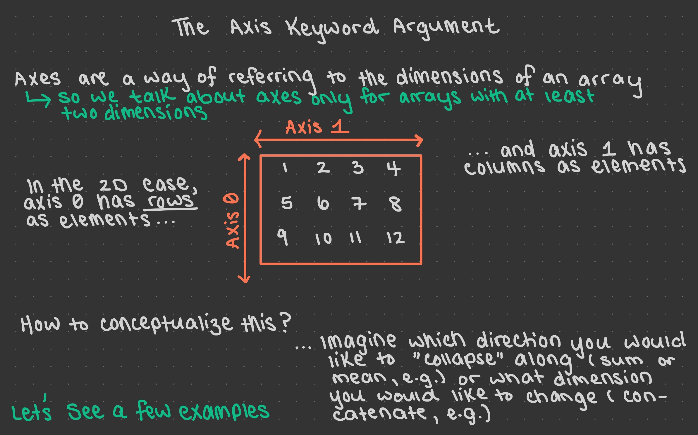 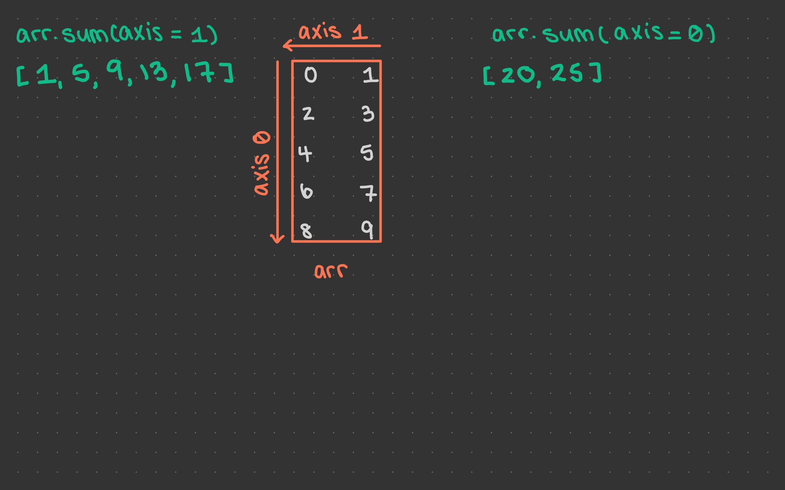 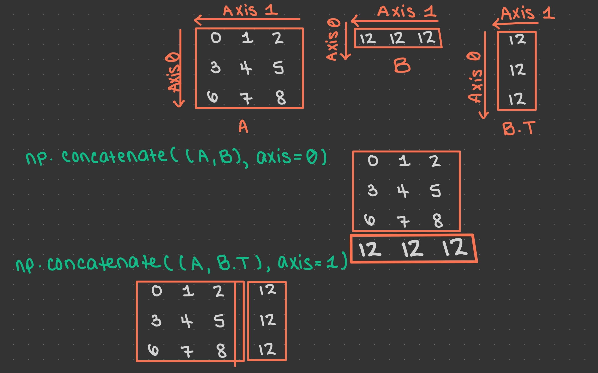